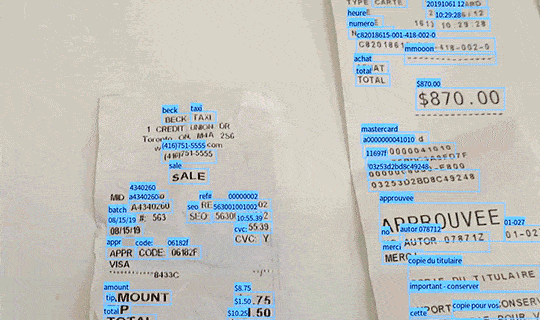

What is OCR?
Optical character recognition, or OCR, are technologies to convert images of text into digitized text data. OCR programs extract text from scanned documents, scene photos, screenshots and image-only pdfs so that the text data can be archived, edited, searched and translated.
OCR technologies are quite beneficial to us. Resources like old printed books, newspapers and historical records are being digitized into PDFs. We can choose to take notes with our hands and ink, and have OCR convert our handwritings into digitized text. We can translate foreign text on product ingredient labels just by pointing our cell phone cameras at them.

OCR by Element AI
Why Anti-OCR?
While OCR technologies liberate us from manual labor, its ability to access and process large scale image data is very helpful for systems of surveillance. In the past, text in images have this natural barrier from the rest of the digital world as being isolated, non-searchable, and off-the-record, with the only intended audience being real human eyes. Now, web based communications would never be deemed secure to us, since OCR technologies has broken the barrier of text and image.
For example, iOS 15’s newest feature, Live Text, could detect and extract text in photos within your camera roll so that you can copy, save, and translate with ease. Certain social media apps also use keyword detection to filter out and censor images containing unwanted text content.
With our means of communication becoming more and more transparent under the eyes of machines, programs and algorithms, I want to excavate some safe spaces just between humans. Through visual design and typography, we might be able to develop ways of text representation that are unrecognizable through OCR systems, but recognizable by humans. Here, I want to explore some methods and directions for Anti-OCR Typography.